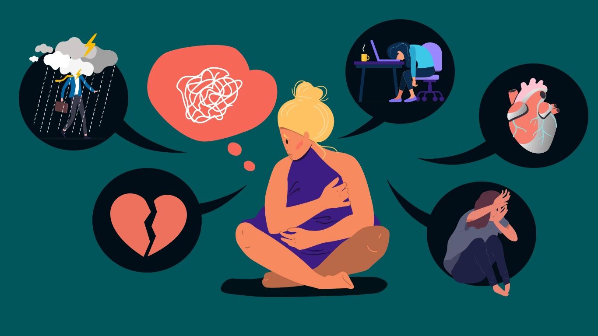

What is a Panic Attack?
A panic attack is a detached episode of mental and physical symptoms driven by fear and anxiety. Panic attacks reach their top within 10 mins and do not usually last more than half an hour. However, they can happen up to several times a day.
Symptoms of a Panic Attack:
- A sense of overwhelming fear or agitation
- Thoughts that you are losing control, choking or having a heart attack
- Difficulty breathing and an increased heart rate
- Trembling, sweating or nausea
- Need to go to the toilet or a churning stomach
Meanwhile, panic attacks tend to occur out of the blue with no trigger. Sometimes the symptoms of a panic attack make it feel like you are dying. It is important to remember that despite how frightening a panic attack is; it does not cause physical harm.

Dissociation and panic attacks
Sometimes the symptoms of a panic attack are so intense they leave the person feeling detached or numb to their body and surroundings. It can leave the person feeling confused.
What is panic disorder?
Is a condition when Panic Attacks are regular and disabling. There is a worry associated with having panic attacks that last for weeks. Moreover, the worries are about consequences or what would happen if another panic attack was to occur. As a result of this worry, we avoid doing certain things, intern limiting ourselves.
Certainly, most people have experienced a panic attack, this is normal. On the other hand, this occurs when there are recurrent panic attacks that have disabling consequences.
What causes panic disorder?
Like most longer-term health conditions, there is no exact cause for panic disorder. Some risk factors for developing panic attacks include:
- If someone in your family has panic attacks or anxiety
- An unlucky event, loss or grief
- Cardiac symptoms, asthma or a history of seizures
- Negative emotional states such as anger, fear and guilt
- Depression
Panic disorder masquerades
Symptoms suggestive of a panic attack don’t always mean it is anxiety triggered an episode. Therefore, sometimes physical illness involving the heart or endocrine glands can cause what at first glance appears to be a panic attack.
Here are some physical illnesses that cause symptoms similar to panic attacks:
Mitral valve prolapse: In other words, a heart valve disease that can run in families. It causes palpitations, shortness of breath and chest discomfort
Arrhythmia: Irregular heartbeat sometimes caused by structural problems to the heart. After that, they can cause light-headedness and palpitations.
Obstructive pulmonary diseases: These are lung diseases such as emphysema and asthma that cause longer-term obstruction of airflow.
Poorly managed diabetes: Hypoglycemic episodes when blood sugar levels drop can cause sweating, palpitations and anxiety
Hyperthyroidism: An overactive thyroid gland can cause tremor, palpitations and agitation.
Why is it important to see a doctor if experiencing repeated Panic Attacks?
Firstly, to tell apart Panic Disorder from some of the serious medical conditions listed above. Your doctor can conduct an assessment and order any blood tests required to diagnose these medical conditions. He/she might listen to your chest, check your heart rhythm and then order blood tests to check your thyroid gland and sugar levels.
Your General Practitioner
In addition, you may have to go back to your family doctor to get the results of your blood test. Health care in Australia is designed around GPs. Panic Attacks are common and your doctor will have experience managing them. Most importantly, they will be able to refer you to a psychologist or psychiatrist for further management if needed. A Medicare rebate and potentially a bulk-billed appointment can be obtained with a psychologist if your doctor does a mental health care plan for you.
Why is it important to treat panic disorder?
- It is treatable and symptom remission is achievable.
- Psychological treatment is the recommended first-line treatment. Unlike antidepressants and other medication, there are no side effects with psychological treatments.
- If not treated panic disorder can impair functioning. That is to say, repeated panic attacks rob a person of self-confidence. It leads to isolation and reduced life enjoyment.
- Untreated repeated panic attacks can lead to other mental illnesses. For example, ongoing panic attacks may make it harder to leave home, in turn setting the foundation for the development of agoraphobia. The loss of self-confidence and ensuing isolation may lead to depression.
- Research has shown that panic attacks are a risk for developing drug and alcohol problems. Substances are used as a means of coping, numbing the anxiety or increasing self-confidence.
- As touched on above panic attacks can be a marker of unaddressed fear, anger or guilt. Panic attacks can be brought about by loss or unresolved grief. Often times panic attacks are what we and others notice, given the abrupt debilitating nature of attacks. It is important that your therapist treats your panic attacks but also explores and addresses underlying drivers.
- Further, can impact family and household dynamics. It is imperative that a person’s panic attacks don’t negatively impact the mental health of others, especially children. Research shows that anxiety in parents can impact a child’s development. Discussion about parental mental illness is a sensitive topic, best done with guidance from a health professional.
Treatment of Panic Disorder
Principles of treatment
The goal of treating panic attacks is to make the condition more manageable and to get to the point where it is not impacting a person’s quality of life. Likewise, anxiety is a problem when it controls and limits people.
Education and awareness of anxiety disorders are important. Speak with your doctor about the different treatment options. However, if something does not make sense, ask questions. Anxiety robs us of control and ownership. It is important that there is a sense of understanding and control of anxiety treatment plans.
Meanwhile, the type of therapy recommended to you will depend on different factors including how it impacts your life and overall mental health. Certainly, no treatment works for everyone. So, it is important that your doctor or therapist is aware of how a treatment is going, and together adjustments are made.
Therapeutic fit or rapport describes whether you feel understood, respected and cared for by your therapist. It forms the foundation or base for good psychological care.
Types of health professionals who can help you.
There are different professionals that can help. A GP can assess, treat and coordinate your care. Your family doctor can also refer you to other health professionals.
Psychologists and counsellors can assess and provide psychological or talking therapies to help you get on top of your anxiety. Psychiatrists can prescribe medications. There are different classes of tablets that can be used both in the short and long term to manage Panic Disorder.
Exercise is one of many ways to tackle anxiety. It can also help with stress relief. Seeing a physical therapist come up with a balanced tailored exercise plan can help with both anxiety and your medical health
Panic attacks can be terrifying for children. Involves their teachers, year coordinators and school nurse as needed to help a child feel supported and cared for if they were to get panic attacks at school.
Lifestyle and supports for panic disorder
Exercise and adequate sleep are a foundational part of good mental health. Addressing stressors; be that at work, study or at home will help with panic attacks and overall anxiety. You often need change. Your therapist can help you negotiate at work, provide supporting documentation for school and help you get through changes at home.
Poor blood sugar control can mimic the symptoms of a panic attack. Smoking and caffeine, as they are stimulants can contribute to panic attacks.
Relaxation and breathwork can help with reducing muscle tension. You can learn techniques online or with a therapist.
Support can also be online via anxiety support groups. Web forums can be a way to learn how common panic disorder is, other peoples experience and what has helped them. Panic disorder can be isolating, sometimes reaching out online can help with connectedness.
Psychological treatments for panic disorder
Psychological treatments for panic attacks challenge how you think about worries. They also involve practical or behavioural steps you can take to reduce anxiety. Psychological treatments can be offered one to one, in a group setting or online. There are a couple of popular Australian e-modules on anxiety offered by universities that coach or guide people to better manage their anxiety. At Epsychiatry we provide psychologist and psychiatrists to work one on one with people experiencing the panic disorder.
Cognitive Behavioral Therapy for panic disorder
CBT has a large evidence base in the treatment of anxiety and panic disorder. Generally, it involves multiple sessions with a therapist.
The way we think impacts how we feel and behave. CBT involves working with a therapist to identify thought which isn’t helpful. Following this, your therapist will help you challenge those anxious thoughts and come up with new ones.
Repeatedly stopping unhelp thoughts and replacing them with more balanced thinking; over time reduces anxiety.
Fast shallow breathing occurs almost always during a panic attack. Therapists teach breathing exercises that should be practised daily. The more aware and in control of breathing the easier it becomes to move out of a panicked state.
Medication
When considering tablets to help with panic disorder, therapists use antidepressants. Research suggests that changes to brain neurotransmitter levels happen during anxiety. Antidepressants and other medications aim to correct these balances; they also help by secondary pathways to reduce sympathetic drive in the body.
However, medications are not first-line treatments. Their use should be with supervision from a general practitioner or psychiatrist.
Selective serotonin reuptake inhibitors (SSRIs)
These are the most commonly used medications for panic disorder. They are a type of antidepressant, commonly prescribed by GP and psychiatrists. Examples of SSRIs include fluoxetine and sertraline.
Generally, anxiety symptoms worsen for up to 10 days after commencing an SSRIs. If symptoms don’t get better it’s important to speak to your doctor. Often SSRIs take a couple of weeks to take effect.
Common side effects of SSRIs include:
- Nausea, headaches and sweating
- Sexual side effects
- Insomnia and feeling agitated
The dose, type of antidepressant and the duration you stay on the medication depend on factors such as the presence of depressive, obsessive-compulsive symptoms or other mental health concerns. Stopping SSRIs comes with withdrawal effects such as:
- Numbness and tingling
- Nausea, sweats and worsening anxiety
- Headaches
- Disturbed sleep
Get your doctor’s help to stop SSRIs.
Pregabalin
There is some evidence to support the use of pregabalin in anxiety disorders, especially generalized anxiety disorder. There is weak evidence supporting its use in the treatment of Panic Disorder.
Clonazepam
The use of clonazepam alongside an SSRI in the early phases of treatment of panic disorder was popular years ago. Concerns around the use of benzodiazepines have recently increased due to notable adverse effects. Further, clonazepam and other benzodiazepines prescribing are under scrutiny, other avenues often are explored before resorting to clonazepam.
In short, reaching out for help when experiencing anxiety and panic attacks can feel overwhelming. Our admin team are well aware of this. You can reach us via email, webchat or have a friend or support person call us. We believe that anxiety is treatable. Our psychologists and psychiatrists can help get you back on track.